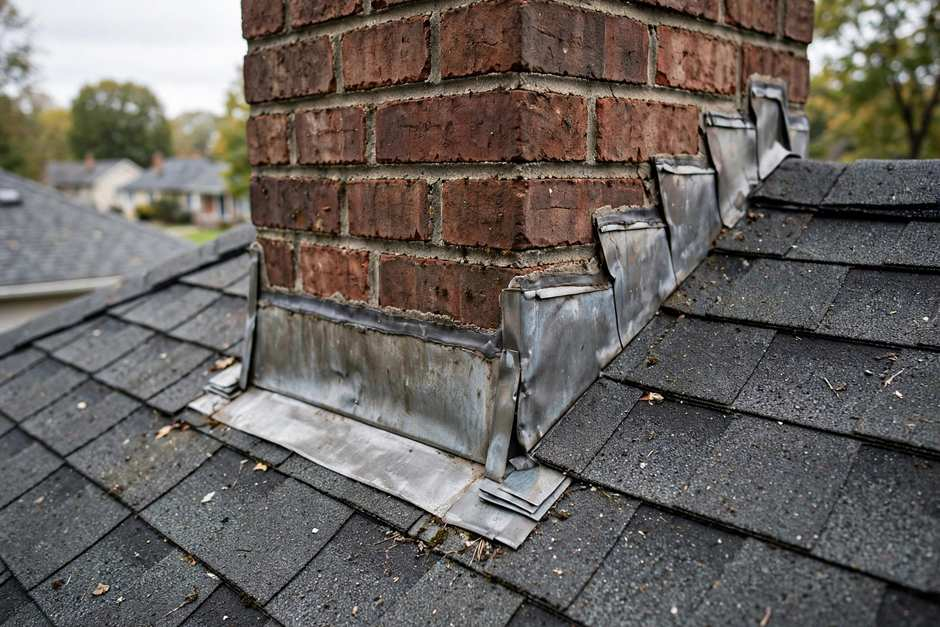

Why Is My Roof Leaking Around the Chimney?
Chimney leaks come from flashing, the crown, mortar, or the cricket — and telling them apart matters, because flashing and masonry are different trades. This guide explains the six causes.

A leak around a chimney can come from the flashing, the crown, the mortar, or the cricket — and the source determines the trade. Flashing is roofing scope; masonry, crown, and mortar work are separate trades, and a roofer who claims both without confirming should be asked which trade handles which part. This guide explains the six causes, how a chimney leak is diagnosed, what repair costs look like in the guides, and when to call.
Chimney flashing is a repeat leak point in contractor guidance, and the chimney is one of the penetrations that most affects replacement scope and cost.
Why is my roof leaking around the chimney in Des Plaines?
The chimney is the largest penetration in most roofs, and the joint between the chimney and the roof moves: the chimney and the roof expand, contract, and settle at different rates, and freeze–thaw cycling works on the joint all winter. At O’Hare, the 1991–2020 normals show about 121 freezing nights a year — a heavy freeze–thaw pattern for a joint that must stay sealed.
The leak’s source is rarely obvious from inside: water entering at the chimney can travel along the deck and show far from the chimney, or show at the chimney when the entry point is elsewhere. Diagnosis starts with the six causes below, checked in order.
The six causes of a chimney leak in Des Plaines Illinois
1. Rusted or damaged flashing
Step flashing and counter-flashing seal the chimney-to-roof joint. When flashing rusts, lifts, or separates, water enters at the joint. Flashing is roofing scope, and its condition is checked as part of any chimney-leak diagnosis.
2. Counter-flashing failure
Counter-flashing is set into the chimney mortar and overlaps the step flashing. When the mortar joint holding it fails, or the counter-flashing itself lifts, the joint opens. Re-setting counter-flashing involves both flashing and mortar — ask who handles each part.
3. Crown deterioration
The crown is the concrete or mortar cap at the top of the chimney. When it cracks, water enters the chimney structure itself and can show as a “roof leak” below. Crown work is masonry scope — ask who handles it.
4. Mortar and spalling brick
Deteriorated mortar joints and spalling brick absorb water, which enters the chimney and shows below. Freeze–thaw cycling accelerates spalling. Masonry repair is a separate trade from roofing; a roofer diagnosing a chimney leak should identify whether the source is flashing or masonry before proposing scope.
5. Missing or failed cricket
A cricket (saddle) is the small peaked structure on the uphill side of a wide chimney that diverts water around it. Without a cricket, water and debris collect against the chimney’s uphill face. Whether a cricket is needed depends on the chimney’s width and the roof’s pitch — a question for the roofer on site.
6. Step flashing gaps
Step flashing is installed in overlapping pieces up the chimney’s sides. Gaps, missing pieces, or flashing that has pulled away from the chimney open a direct path for water. Step flashing is checked course by course during diagnosis.
Why chimney flashing leaks after rain in Des Plaines
Flashing leaks after rain because the joint is the roof’s most stressed seal: two materials moving differently, exposed to wind-driven rain, freeze–thaw, and debris accumulation. Wind-driven rain reaches joints that vertical rain does not, which is why a chimney can leak in a storm and stay dry in ordinary rain.
The pattern matters: leaks that follow wind-driven rain point to the joint; leaks that follow any rain point to a larger opening; leaks that appear in winter point to ice-dam backup at the eave or to freeze–thaw opening the joint. Record which conditions produce the leak — that record is the most useful diagnostic information a homeowner can provide.
How a chimney leak is diagnosed
Diagnosis moves from the general to the specific, and each step is professional scope:
- Interior signs. Where water shows, when it first appeared, and which weather produces it. Dated photographs of stains and their positions relative to the chimney.
- Attic check. Daylight, staining, and dampness near the chimney, and whether the stain pattern matches the chimney’s position or points elsewhere.
- Exterior check. Flashing condition, counter-flashing seating, mortar and brick condition, crown condition, and cricket presence — checked from the roof by a professional.
- Trade identification. Whether the source is flashing (roofing), masonry (separate trade), or both — and who handles each part. A scope that does not name the trade for each part is incomplete.
For inspection scope in general, see the roof inspection page.
What chimney leak repair costs in Des Plaines in 2026
Guide figures, attributed, and not this business’s prices. Chimney flashing is a narrow scope, and the guides price it as part of broader repair ranges:
- Flashing repair: $200–$500 (Angi, Chicago, updated 4 August 2026).
- Chimney reflash: $400–$900 (XL, Illinois, 2026).
- Leak repair, general: $350–$1,550 (Angi, Chicago, updated 4 August 2026).
Masonry, crown, and cricket work are separate scopes with separate pricing, and no guide figure for those is published here. Repair pricing for a particular chimney comes from a written on-site estimate, after the source is identified. See the roof repair page for the repair topic.
Can a chimney leak be repaired without replacing flashing?
Sometimes, and sometimes not — it depends on the source. If the source is a single lifted or separated flashing piece, re-seating and sealing may suffice. If the flashing is rusted through, if counter-flashing has lost its mortar seating, or if the joint has failed across its length, replacement of the flashing system is the durable answer. Sealing over failed flashing with caulk is not a repair: it traps moisture and masks the joint an inspector needs to read.
If the source is masonry — crown, mortar, or spalling brick — flashing work alone does not solve it, and masonry repair is a separate trade. The diagnosis determines the scope, which is why the trade-identification step matters.
Common mistakes Des Plaines homeowners make with chimney leaks
- Caulking the joint. Caulk over failed flashing traps moisture and hides the defect. It is not a repair.
- Assuming the chimney is the source. Water travels. The stain at the chimney may come from a valley, a skylight, or a penetration uphill.
- Ignoring the masonry question. A flashing scope that does not address a deteriorated crown or mortar leaves the leak in place.
- Skipping the cricket question. Wide chimneys without crickets collect water and debris on the uphill face. Ask whether a cricket is needed.
- Waiting for the next storm. Chimney leaks worsen with freeze–thaw. Document and call after the first sign.
When to call a professional
Call when water shows near the chimney, when flashing looks lifted or rusted, when mortar or brick is visibly deteriorated, or when a previous seal has failed. State which conditions produce the leak — that record helps the diagnosis. For storm-related chimney damage, see the storm damage roof repair page.
Frequently Asked Questions
Why is my roof leaking around the chimney in Des Plaines?
Flashing failure, counter-flashing seating loss, crown deterioration, mortar and spalling brick, a missing or failed cricket, or step flashing gaps. Flashing is roofing scope; crown, mortar, and masonry are separate trades — the diagnosis names which trade handles each part.
How is a chimney leak diagnosed in Des Plaines IL?
Interior signs and weather patterns first, then an attic check, then an exterior check of flashing, mortar, crown, and cricket by a professional. The diagnosis identifies whether the source is flashing, masonry, or both.
How much does chimney leak repair cost in Des Plaines?
Guide figures: flashing repair $200–$500 (Angi Chicago, updated August 2026); chimney reflash $400–$900 (XL Illinois, 2026). Masonry and crown work are separate scopes. Pricing comes from a written on-site estimate after the source is identified.
Can a chimney leak be fixed without replacing flashing?
Sometimes — a single lifted piece may be re-seated. Rusted, separated, or lengthwise-failed flashing needs replacement, and caulk over failed flashing is not a repair. Masonry sources need masonry work, not flashing work.
How long does chimney leak repair take in Des Plaines Illinois?
No duration is stated: it depends on the source, the scope, and whether masonry work is involved. Ask for scheduling terms in writing after the diagnosis.
Get help with Roofing in Des Plaines
If water is showing near the chimney, record which weather produces it and call WP Exterior Inc at (224) 802-4866 during listed hours to discuss a diagnosis.